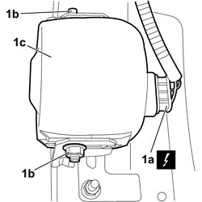

5580E40 ANTI-THEFT DEVICE SIREN - R+R
- Path
- Procedures > 55 ELECTRICAL EQUIPMENT > 5580 SPECIAL ACCESSORIES > 5580E ANTI-THEFT DEVICE > 5580E40 ANTI-THEFT DEVICE SIREN - R+R
- Kind
- repair procedure (removal / refitting; the operation number is the code)
- Applies to
- all engines; all production periods
- Interactive page
- https://sloeber94.github.io/elrnDB-fCrm/en/#/194000818
Applies to: all engines; all production periods
 Removing
Removing
 Refitting
Refitting- Turn the ignition key to the OFF position.
- Disconnect the negative battery terminal.
Description | Connector | |
|---|---|---|
BATTERY |
- Position the vehicle on a lift.
Op. 4450B04 RIGHT FRONT WHEEL - R.R
Op. 7055B91 RIGHT FRONT WHEEL ARCH LINER - R.R.
1. Disconnect electrical connection (1a), unscrew and recover nuts (1b) and remove siren (1c).
Description | Connector | |
|---|---|---|
1a | ALARM SIREN |

Applies to: all engines; all production periods
Refitting
Removing- Check that the siren is not damaged.
- Place the siren in the housing and tighten the fixing nuts.
- Connect the siren electrical connection.
Description | Connector | |
|---|---|---|
ALARM SIREN |
Op. 7055B91 RIGHT FRONT WHEEL ARCH LINER - R.R.
Op. 4450B04 RIGHT FRONT WHEEL - R.R
- Remove the vehicle from the lift.
- Connect the negative battery terminal.
Description | Connector | |
|---|---|---|
BATTERY |
Topics linked from this page (4)
- 4450B04 RIGHT FRONT WHEEL - R.R
- 7055B91 RIGHT FRONT WHEEL ARCH LINER - R.R.
- A001 BATTERY
- P090 ALARM SIREN